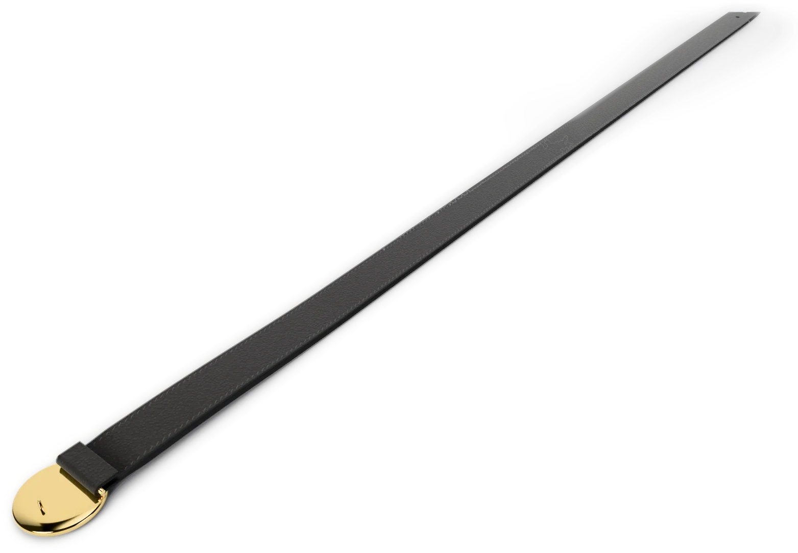
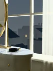
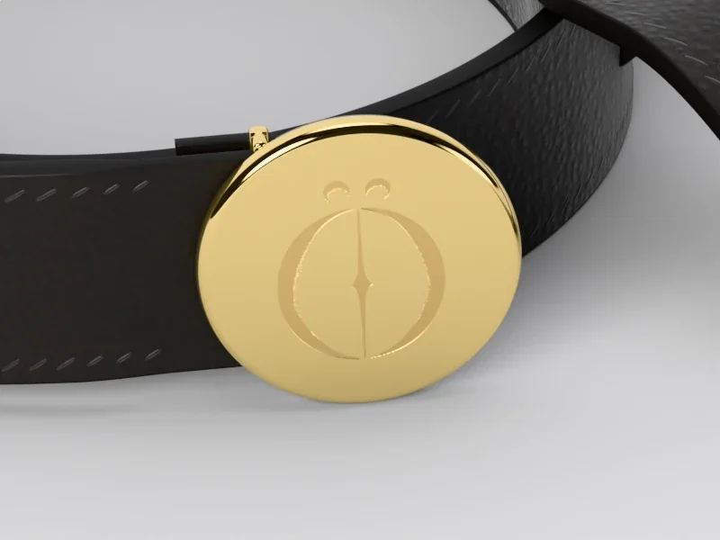

STAND-IN · img/coaraci/front/master.* (departments/apparel/new-pieces-2026-11/build/disc-belt/site/disc_belt_front_16k.png; 16K, 15360 × 8640)
STAND-IN · img/coaraci/front/master.* (departments/apparel/new-pieces-2026-11/build/disc-belt/site/disc_belt_front_16k.png; 16K, 15360 × 8640)
STAND-IN · img/coaraci/straight/master.* (straight view, 8K; 8K, 7680 × 4320)Where it is going
The suite, at first light
The curtain drawn back on one side.
Chapter I · Accessories
Coaraci
Belt
Scroll to walk around it
Chapter I
Coaraci
Belt
Three centimetres of black calfskin and one gold disc, the Ö engraved where the light falls on it.
- LEATHER
- BLACK CALFSKIN, 3 CM
- BUCKLE
- GOLD DISC, THE Ö ENGRAVED
PRICE ON REQUEST
Keep a seatThe register sees the pre-sale first.
Details
- Pre-sale
- Made to order. We email your delivery date once production is confirmed. Cancel for a full refund any time before production starts.
- Returns
- Exchanges within 14 days of delivery, unused and with tags.
- Care
- Wipe with a soft dry cloth. Keep from rain and heat; if it gets wet, let it dry slowly away from a radiator. Store in its dust bag, stuffed with tissue, out of the light. Leather cleaning by a specialist only. Care
- Size
- The measurements

STAND-IN · img/coaraci/world/master.* (C12: the last frame, the world plate (the suite, at first light); 8K, 5760 × 7680)Where it is going · C12
The suite, at first light
The curtain drawn back on one side.
On the screen in the film, the picture is tomorrow: each piece in the place it is going, with one place kept for someone.
The filmClose

STAND-IN · img/coaraci/detail-disc/master.* (the disc, 8K close-up; 8K, 7680 × 4320)The disc
The painted edge
The maker’s notes
Coaraci, the disc belt
- It begins as two layers of black calfskin: 30 mm wide, 3.6 mm thick, 105 cm from bar to tip.
- It is stitched 3.0 mm in from each edge, a stitch every 3.5 mm, and the edges are painted.
- Five holes are punched, 4.5 mm across, 25 mm apart, the first 90 mm from the tip.
- It closes on a gold disc, 40 mm, the mark engraved 26 mm tall.
Behind it: a 2.4 mm gold bar on two posts and a 1.5 mm prong. From the front, the disc is all there is.
Read the bookThe packaging
The house lights go down. Black board, cream tissue the colour of the screen, and one gold disc between you and the first scene.
 STAND-IN · img/shared/pack-closed/master.* (packaging/chapter1/renders: closed (the approved final, 3840 px); 8K, 7680 × 4320)
STAND-IN · img/shared/pack-closed/master.* (packaging/chapter1/renders: closed (the approved final, 3840 px); 8K, 7680 × 4320)The closed box, its band and the gold disc
 STAND-IN · img/shared/pack-open/master.* (packaging/chapter1/renders: open (the approved final, 3840 px); 8K, 7680 × 4320)
STAND-IN · img/shared/pack-open/master.* (packaging/chapter1/renders: open (the approved final, 3840 px); 8K, 7680 × 4320)The open box, the piece folded in cream tissue
 STAND-IN · img/shared/pack-disc/master.* (packaging/chapter1/renders: disc (the approved final, 3840 px); 8K, 7680 × 4320)
STAND-IN · img/shared/pack-disc/master.* (packaging/chapter1/renders: disc (the approved final, 3840 px); 8K, 7680 × 4320)The gold disc on the band
 STAND-IN · img/shared/pack-shopping/master.* (packaging/chapter1/renders: shopping (the approved final, 3840 px); 8K, 7680 × 4320)
STAND-IN · img/shared/pack-shopping/master.* (packaging/chapter1/renders: shopping (the approved final, 3840 px); 8K, 7680 × 4320)The shopping bag with cream tissue
 STAND-IN · img/shared/pack-trims/master.* (packaging/chapter1/renders: trims (the approved final, 3840 px); 8K, 7680 × 4320)
STAND-IN · img/shared/pack-trims/master.* (packaging/chapter1/renders: trims (the approved final, 3840 px); 8K, 7680 × 4320)The hang tag, the card and the sealed envelope